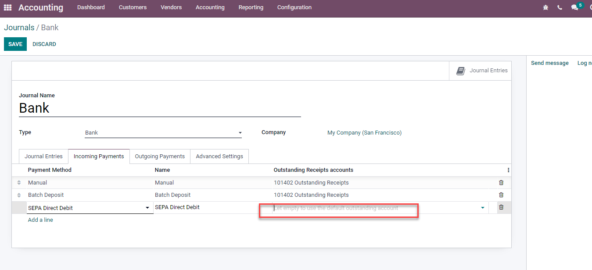

Online payments¶
Odoo embeds several payment providers that allow your customers to pay online, on their customer portals, or on your eCommerce website. They can pay sales orders, invoices, or subscriptions with recurring payments using their favorite payment methods, such as credit cards.

Note
Odoo apps delegate the handling of sensitive information to the certified payment provider so that you don’t ever have to worry about PCI compliance. No sensitive information (such as credit card numbers) is stored on Odoo servers or Odoo databases hosted elsewhere. Instead, Odoo apps use a unique reference number for the data stored safely in the payment providers’ systems.
Supported payment providers¶
To access the supported payment providers, go to or .
Online payment providers¶
Payment flow from |
||||||
|---|---|---|---|---|---|---|
Odoo |
✔ |
Full only |
Full and partial |
|||
The provider’s website |
||||||
The provider’s website |
||||||
Odoo |
✔ |
Full only |
Full only |
|||
The provider’s website |
||||||
The provider’s website |
✔ |
|||||
The provider’s website |
||||||
The provider’s website |
||||||
The provider’s website |
✔ |
|||||
The provider’s website |
Full only |
Full and partial |
||||
The provider’s website |
||||||
The provider’s website |
✔ |
Full only |
Full and partial |
✔ |
Note
Each provider has its own specific configuration flow, depending on which feature is available.
Some of these online payment providers can also be added as bank accounts, but this is not the same process as adding them as payment providers. Payment providers allow customers to pay online, and bank accounts are added and configured in the Accounting app to do a bank reconciliation.
Tip
In addition to the regular payment providers that integrate with an API, such as Stripe, PayPal, or Adyen, Odoo bundles the Demo payment provider. This payment provider allows you to test business flows involving online payments. No credentials are required as the demo payments are dummy payments.
Bank payments¶
- When selected, Odoo displays your payment information with a payment reference. You have to approve the payment manually once you have received it in your bank account.
- Your customers can make a bank transfer to register a SEPA Direct Debit mandate and get their bank account charged directly.
Enable a payment provider¶
To add a new payment provider and make its related payment methods available to your customers, proceed as follows:
Go to the payment provider’s website, create an account, and make sure you have the API credentials requested for third-party use. These are necessary for Odoo to communicate with the payment provider.
In Odoo, navigate to the Payment providers by going to or .
Select the provider and configure the Credentials tab.
Set the State field to Enabled.
Select a payment journal.
Note
The fields available in the Credentials tab depend on the payment provider. Refer to the related documentation for more information.
Once you have enabled the payment provider, it is automatically published on your website. If you wish to unpublish it, click the Published button. Customers cannot make payments through an unpublished provider, but they can still manage (delete and assign to a subscription) their existing tokens linked to such a provider.
Test mode¶
If you wish to try the payment provider as a test, set the State field in the payment provider form to Test mode, then enter your provider’s test/sandbox credentials in the Credentials tab.
Note
By default, the payment provider remains unpublished in test mode so that it’s not visible to visitors.
Warning
We recommend using the test mode on a duplicate or a test database to avoid potential issues with your invoice numbering.
Payment form¶
You can change the payment provider’s appearance on your website in the Configuration tab of the selected payment provider. Modify its name in the Displayed as field and adapt the Supported Payment Icons if necessary.
Tokenization¶
If the payment provider supports this feature, customers can save their payment method details for later. To enable this feature, go to the Configuration tab of the selected payment provider and enable Allow Saving Payment Methods.
In this case, a payment token is created in Odoo to be used as a payment method for subsequent payments without the customer having to enter their payment method details again. This is particularly useful for the eCommerce conversion rate and subscriptions that use recurring payments.
Note
You remain fully PCI-compliant when you enable this feature because Odoo does not store the card details directly. Instead, it creates a payment token that only references the card details stored on the payment provider’s server.
Manual capture¶
If the payment provider supports this feature, you can authorize and capture payments in two steps instead of one. To enable this feature, go to the Configuration tab of the selected payment provider and enable Capture Amount Manually.
When you authorize a payment, the funds are reserved on the customer’s payment method but not immediately charged. They are charged when you manually capture the payment later on. You can also void the authorization to cancel it and release the reserved funds. Capturing payments manually is helpful in many situations:
Receive the payment confirmation and wait until the order is shipped to capture the payment.
Review and verify that orders are legitimate before the payment is completed and the fulfillment process starts.
Avoid potentially high refund fees for refunded payments: payment providers will not charge you for voiding an authorization.
Hold a security deposit to return later, minus any deductions (e.g., in case of damages).
To capture the payment after it was authorized, go to the related sales order or invoice and click the Capture Transaction button. To release the funds, click the Void Transaction button.
Note
Some payment providers support capturing only part of the authorized amount. The remaining amount can then be either captured or voided. These providers have the value Full and partial in the table above. The providers that only support capturing or voiding the total amount have the value Full only.
The funds are likely not reserved forever. After a certain time, they may be automatically released back to the customer’s payment method. Refer to your payment provider’s documentation for the exact reservation duration.
Odoo does not support this feature for all payment providers, but some allow the manual capture from their website interface.
Refunds¶
If your payment provider supports this feature, you can refund payments directly from Odoo. It does not need to be enabled first. To refund a customer payment, navigate to it and click the Refund button.
Note
Some payment providers support refunding only part of the amount. The remaining amount can then optionally be refunded, too. These providers have the value Full and partial in the table above. The providers that only support refunding the total amount have the value Full only.
Odoo does not support this feature for all payment providers, but some allow to refund payments from their website interface.
Express checkout¶
If the payment provider supports this feature, you can allow customers to use the Google Pay and Apple Pay buttons and pay their eCommerce orders in one click. When they use one of these buttons, customers go straight from the cart to the confirmation page without filling out the contact form. They just have to validate the payment on Google’s or Apple’s payment form.
To enable this feature, go to the Configuration tab of the selected payment provider and enable Allow Express Checkout.
Note
All prices shown on the express checkout payment form always include taxes.
Extra Fees¶
If the payment provider supports this feature, you can add extra fees to online transactions. Fees can be configured either as fixed amounts and percentages, variable amounts and percentages, or both simultaneously. They can also differ based on whether the transaction is domestic or international.
To enable this feature, go to the Fees tab of the selected payment provider, enable Add Extra Fees, and configure the settings to your liking.
Note
Fees are calculated on the tax-included price.
Availability¶
You can adapt the payment provider’s availability by specifying the Maximum Amount allowed and modifying the Currencies and Countries in the Configuration tab.
Currencies and countries¶
All payment providers have a different list of available currencies and countries. They serve as a first filter during payment operations, i.e., the payment methods linked to the payment provider are not available for selection if the customer’s currency or country is not in the supported list. As there might be errors, updates, and unknowns in the lists of available currencies and countries, adding or removing a payment provider’s supported currencies or countries is possible.
Note
Payment methods also have their own list of available currencies and countries that serves as another filter during payment operations.
If the list of supported currencies or countries is empty, it means the list is too long to be displayed, or Odoo does not have information on that payment provider. The payment provider remains available, even though it is possible the payment will be refused at a later stage should the country or currency not be supported.
Maximum amount¶
You can restrict the Maximum Amount that can be paid with the selected provider. Leave
the field to 0.00 to make the payment provider available regardless of the payment amount.
Important
This feature is not intended to work on pages that allow the customer to update the payment amount, e.g., the Donation snippet and the Checkout page when paid shipping methods are enabled.
Payment journal¶
A payment journal must be defined for the payment provider to record the payments on an outstanding account. To do so, go to the Configuration tab of the selected payment provider and select a Payment Journal.
Note
The payment journal must be a Bank journal.
The same journal can be used for several payment providers.
Accounting perspective¶
From an accounting perspective, there are two types of online payment workflows: the payments that are directly deposited into your bank account and follow the usual reconciliation workflow, and those coming from third-party online payment providers and require you to follow another accounting workflow. For these payments, you need to consider how you want to record your payments’ journal entries. We recommend you ask your accountant for advice.
By default, the Bank Account defined for the payment journal is used, but you can also specify an outstanding account for each payment provider to separate the provider’s payments from other payments.
